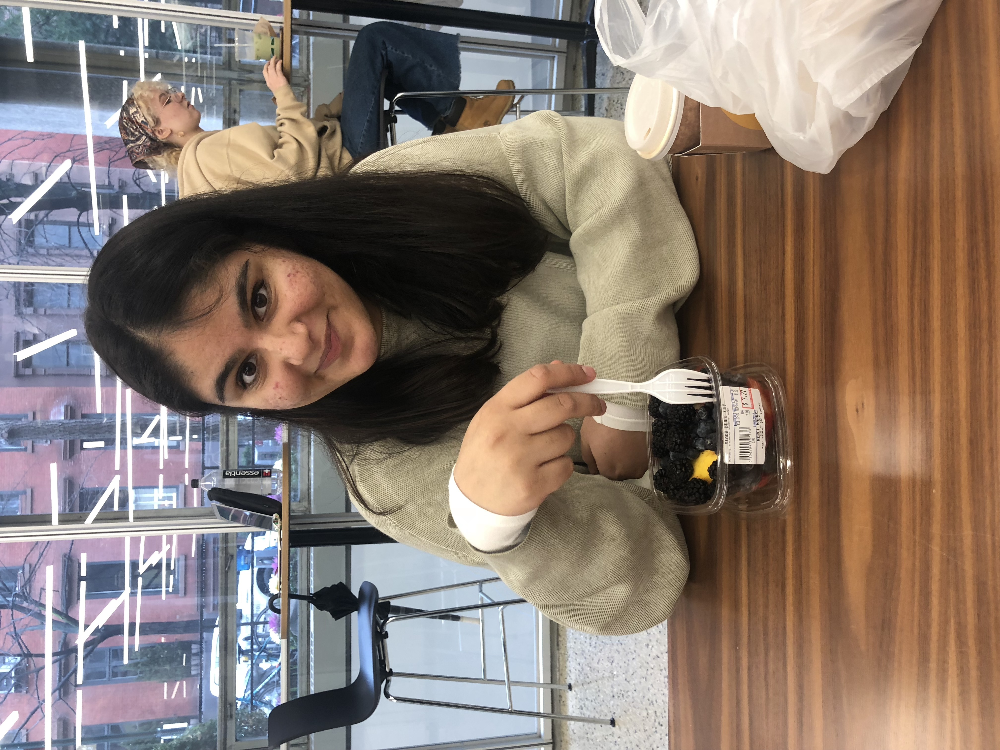
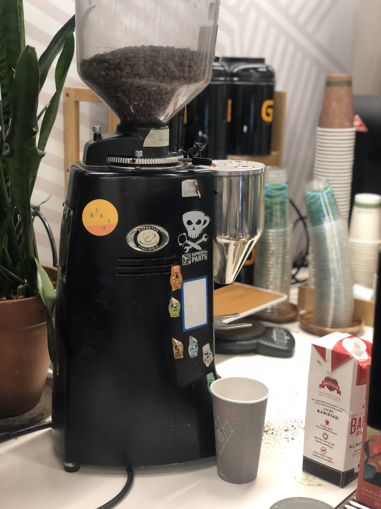
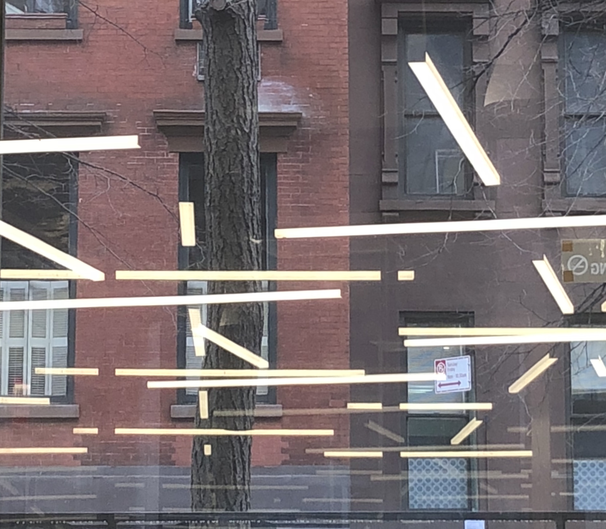

02.10.2020
Mood: Productive 🙌
Today I worked on my Core Studio Interaction project. I was considering adding sounds and shapes tto my project for which i had to record the objects in my image along with the visuals.
I started with recording the sounds of the Lang cafe. I ended up overhearing a lot of conversations in the audio which influenced my design choice.

After attending my political economy lecture, I was inspired to add a human touch to my project since all the sounds I recorded sounded very technical.

While sitting in the Cafe, I also noticed the lights being reflected on the window in the front of me. I decided to take a photo so i could try and trace the shapes to add to the sound of the image.
